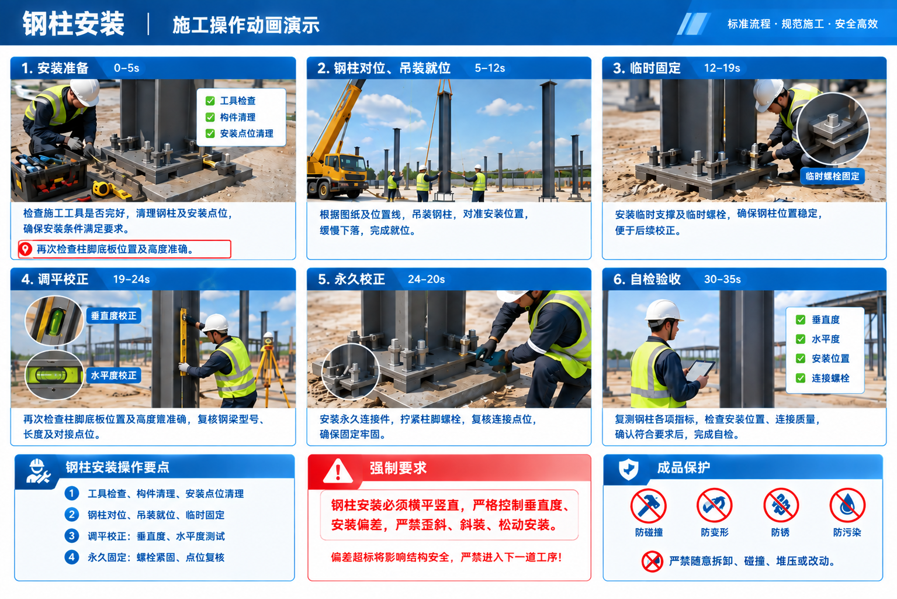
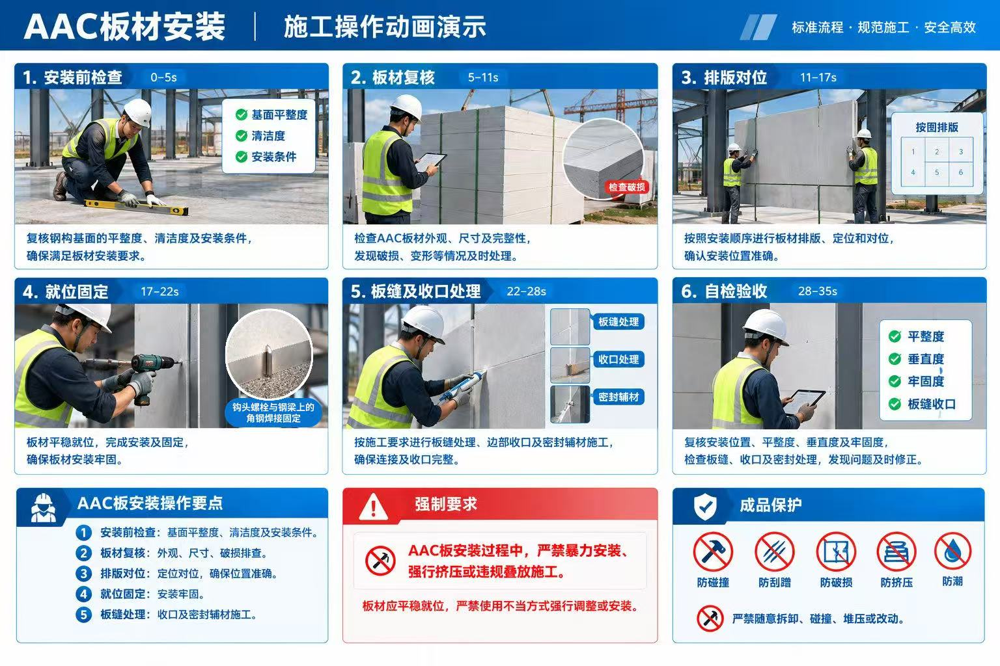

宝鹏装配式体系3.0产品安装手册
现场安装指导手册 · 版本一
☰
目录
共 14 节
▼
一、手册前言
1.1 手册用途
本手册用于宝鹏装配式体系3.0产品现场安装指导，面向现场施工人员，重点说明现场实际操作要求。
1.2 适用范围
适用于技术交底、基础埋置等前期工作完成并复检合格后的施工阶段，覆盖货物进场、卸货、构件识别、构件安装、竣工验收等全流程工序。
1.3 重要提示
手册中红色标注内容为强制施工要求，必须严格执行。本手册仅用于现场安装指导，不包含CAD图纸及设计内容。
二、分步标准化安装施工流程
2.1 第一步：前期准备及打包发货
2.1.1 技术交底及施工注意事项
施工前组织现场作业人员进行技术交底，明确构件编号、安装顺序、施工操作要求、质量偏差要求及安全注意事项。作业人员充分理解施工流程及注意事项后，方可进行现场安装。
2.1.2 现场施工条件检查
施工前复核现场基础及作业条件：
- 确认作业区域满足施工要求。
- 确认吊装作业空间及通道满足要求。
- 现场施工人员提前规划材料堆放区域。
- 确保施工用电及相关设备状态正常。
- 确保测量、吊装、紧固等施工工具齐全且状态完好。
- 检查柱脚底板，确认安装位置与标高符合图纸要求。
2.1.3 工厂打包及发货原则
● 钢结构打包
- 打包顺序：
钢柱 → 一层梁 → 二层梁 → 屋面梁/屋架 → 支撑、系杆、檩条 - 钢梁打包：
同一楼层钢梁按长度分类打包，每捆重量≤2 t。 - 楼层标识：
各楼层钢梁两端采用不同颜色喷漆进行区分：1F：红色 2F：蓝色 3F：黄色 - 编号标识：
发货前每捆钢构挂牌，明确标注构件编号及包号。 - 连接件及散件：
连接板、加劲板、支座等散件清点数量后，以木托盘集中打包，使用缠绕膜固定，并挂牌标明托盘内构件编号。 - 檩条打包：
按楼层分类打包；数量较多时可分批打包，每捆高度≤60 cm。 - 螺栓及配套材料：
螺栓、垫片、螺母成套装入木箱，与对应构件同车发货。
● AAC板材及配套材料打包
- 打包顺序：
一体大板、切割板均按照现场安装流程及顺序进行叠层打包。 - 包装尺寸及重量 ：
切割板：每托高度一般≤1.15 m。
一体大板：每托高度一般≤1.30 m。
每托板材重量：≤3t。
- 打包原则：
原则上每托板材对应同一楼层；如有特殊情况，在唛头上明确标识。一体大板采用铁托包装，并设置楼层标识，如：1F、2F、3F……
● 装车原则（40OT集装箱）：按安装顺序装车，重件在下、轻件在上。
- 车厢底部先装底层钢柱等重型构件。
- 钢柱装完后，根据空间依次装入各楼层框架梁。
- 支撑、拉条、连接板、檩条等放在上层，底部垫方木。
- AAC板材及其他配套材料根据现场安装顺序及装车空间合理安排。
2.2 第二步：货物进场与卸货堆放作业(建议准备一台至少5t吊车)
2.2.1 进场查验
物料完整性、标签完整性、外观破损检查（如有问题，及时与厂家联系）。
2.2.2 标准化卸货操作
吊装/人工卸货规范、受力点位准确、轻拿轻放。
2.2.3 及时分类堆放
按楼层、构件类型、安装先后顺序分区摆放。
2.2.4 卸货及堆放要求
● 钢构卸货及堆放要求
- 卸货前规划：
根据施工顺序、装车顺序及现场堆放区域提前规划卸货位置，确保卸货后便于分类和取用。 - 按顺序分类堆放：
按楼层、构件类型、编号及包号分类卸货、堆放；先安装、先使用的构件优先放置在便于取用的位置。 - 核对标识及堆放条件：
卸货时核对楼层标识、构件编号及包号；构件应放置在平整、稳定、通道畅通的区域，并做好垫置。 - 安全堆放：
避免构件倾倒、变形、碰撞及锈蚀，不得影响后续吊装和现场施工。 - 强制要求：
钢结构必须按施工顺序及装车顺序分类堆放，严禁不同楼层、不同编号构件混放，不得堵塞施工通道。
● AAC板材卸货及堆放要求
- 卸货前规划：
根据现场施工顺序、打包顺序及堆放区域提前规划卸货位置，便于后续识别和取用。 - 按顺序分类堆放：
按楼层、板材类型及安装顺序进行卸货和分类，先安装、先使用的板材优先放置在便于取用的位置。 - 平整铺放：
厂家已根据板材承载能力、受力点及现场安装顺序进行叠层打包。开箱卸货后，现场不得整托再次叠放或上下堆压，应平整铺放。 - 安全保护：
堆放过程中避免板材受力不均、倾倒、碰撞及损坏，并保持堆放区域稳定、通道畅通。 - 强制要求：
AAC板材卸货后必须平整铺放，严禁整托叠放、上下堆压或随意堆放，避免板材损坏。
2.3 第三步：构件识别
2.3.1 钢构构件识别

2.3.2 AAC板材构件识别

2.4 第四步：安装流程确认
现场安装按照“先钢结构、后楼板及墙板；先下层、后上层；逐层向上”的顺序进行。最终顺序与现场施工人员协商后确定。
标准安装顺序：
钢柱 → 底层钢梁 → 二层钢梁 → 底层楼板/墙板 → 二层楼板 → 屋面钢梁 →二层墙板→屋面板
施工过程中，应按照上述顺序组织构件吊装及安装，如有特殊情况及时与技术人员联系。每一道工序完成并确认符合要求后，再进行下一道工序。
2.5 第五步：钢柱安装施工（动画一）

2.5.1 安装操作
- 安装准备：工具校验、钢柱及安装点位清理、再次确认柱脚底板位置与标高符合图纸要求。
- 吊装就位：钢柱对位、吊装就位，并进行临时固定。
- 调平校正：调整钢柱位置，校正垂直度、水平度。
- 永久固定：完成永久固定及螺栓紧固。
- 复核调整：复核安装点位及整体安装状态，及时调整偏差。
2.5.2 验收与强制要求
- 检查钢柱垂直度、水平度及安装位置是否符合要求。
- 检查柱脚及连接螺栓是否紧固、无松动、无漏拧。
- 检查钢柱是否存在歪斜、变形或碰伤。
- 钢柱安装必须横平竖直，严格控制垂直度及安装偏差，严禁歪装、斜装、松动安装。（强制要求）
2.5.3 成品保护
防碰撞、防变形、防锈、防污染。严禁随意拆卸、碰撞、堆压或改动。
2.6 第六步：钢梁安装（动画二）

2.6.1 安装操作
- 构件复核：核对钢梁型号、长度及对接点位，确认构件与安装位置一致。
- 吊装就位：按施工顺序进行钢梁吊装，与钢柱连接位置准确对接、拼装。
- 对位调平：调整钢梁安装位置，完成接缝调平、对位校准，并进行临时固定。
- 连接紧固：完成连接件安装及螺栓紧固，确保钢梁连接可靠。
- 整体稳定检查：检查钢梁连接状态及整体钢结构稳定性，发现问题及时调整。
2.6.2 验收及强制要求
- 检查钢梁水平度、平整度、安装位置及连接状态是否符合要求。
- 检查连接件及螺栓是否安装齐全、紧固可靠，无松动、漏拧。
- 对钢结构整体进行复核，检查整体安装是否存在偏差，并及时进行修正。
- 钢梁安装必须保证水平、平整、连接可靠；整体钢结构体系必须保持横平竖直，严格控制安装偏差。严禁未校正、未固定或存在明显偏差的情况下进入下一道工序。（强制要求）
2.6.3 成品保护
钢梁及钢结构安装完成后，应做好防碰撞、防变形、防锈、防污染保护。严禁随意拆卸、碰撞、堆压或改动已安装构件及连接件。
2.7 第七步：AAC板材安装施工（动画三）

2.7.1 安装操作
- 安装前检查：复核钢构基面的平整度、清洁度及安装条件，确保满足板材安装要求。
- 板材复核：检查AAC板材外观、尺寸及完整性，发现破损、变形等情况及时处理。
- 排版对位：按照安装顺序进行板材排版、定位和对位，确认安装位置准确。
- 就位固定：板材平稳就位，钩头螺栓焊接固定，确保板材连接牢固。
- 板缝及收口处理：按施工要求进行板缝处理、边部收口及密封辅材施工，确保连接及收口完整。
2.7.2 验收及强制要求
- 检查AAC板安装位置、平整度、垂直度及牢固度是否符合要求。
- 检查板缝、收口及密封处理是否完整、可靠。
- 检查板材是否存在松动、错位、破损等问题，发现问题及时修正。
- AAC板材安装过程中，严禁暴力安装、强行挤压或违规叠放施工。板材应平稳就位，严禁使用不当方式强行调整或安装。（强制要求）
- 吊装AAC板材过程中，吊装区域严禁站人。（强制要求）
2.7.3 成品保护
AAC板安装完成后，应做好防碰撞、防刮蹭、防破损、防挤压、防潮保护。严禁随意拆卸、碰撞、堆压或改动已安装板材及连接部位。
2.8 第八步：竣工验收
2.8.1 验收前提条件
- 钢结构、AAC 板材全部安装施工完成。
- 完成现场自检，所有安装偏差已整改到位。
- 施工现场清理完毕，成品保护措施落实到位。
- 构件标签、安装记录完整齐全。
2.8.2 主要验收标准
- 钢结构验收： ① 钢柱垂直度符合规范要求，无歪斜；钢梁水平度达标，整体框架横平竖直。 ② 所有螺栓紧固到位，无漏拧、虚拧，柱脚、对接节点连接牢固。 ③ 构件无磕碰变形、锈蚀损伤，构件安装位置与施工要求保持一致。
- AAC 板材验收： ① AAC 墙板、楼板就位准确，板材无破损、开裂、缺角。 ② 板缝间隙均匀，收口、密封胶施工完整，密封连续无断缝、无气泡。 ③ 板材固定点齐全，固定牢固，无松动晃动现象。
2.8.3 验收结果判定规则
- 所有检查项均满足验收标准 → 验收合格，可移交下一工序。
- 如有偏差、缺陷：标记问题位置，整改完成后重新检查；复检合格才算验收通过。
- 验收做好记录，留存验收检查资料。
三、常见施工问题与快速整改方案
1. 钢柱偏差 → 检查、调整、复测
2. 钢梁水平/标高偏差 → 调整、复测
3. AAC板安装错位 → 检查排版、调整
4. 板缝过大/不均匀 → 重新调整、处理
5. 固定不牢 → 检查固定点并重新固定
6. 构件编号错误/找料错误 → 停止安装、重新核对
7. 构件或板材破损 → 隔离、标识、按要求处理